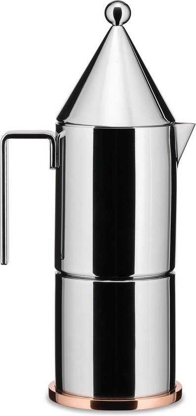

Alessi La Conica review

Onze scores
- Design & bouwkwaliteit 5/5
- Koffiesmaak 4/5
- Gebruiksgemak 3,5/5
- Onderhoud 3,5/5
- Prijs-kwaliteit 3,5/5
Oordeel
Een uitgesproken designstuk met mooie materialen (RVS + koperen bodem) dat ook goede, krachtige moka zet, maar minder praktisch is in dagelijks gebruik én flink geprijsd. Ideaal als je een iconische mokapot zoekt die vooral visueel mag uitpakken.
De Alessi La Conica is geen doorsnee moka percolator, maar een mini‑architectuurstuk ontworpen door Aldo Rossi. De strakke kegelvorm, het cilindrische deksel en de koperen voet maken er een echte blikvanger van op je fornuis. Achter dat sculpturale uiterlijk schuilt een volwaardige espressomaker in roestvrij staal, bedoeld voor wie zijn koffiehoek net zo belangrijk vindt als de koffie zelf.
Ontwerp & materialen: inox + koper, pure lijnen
La Conica is opgebouwd uit eenvoudige geometrische vormen: een kegel in roestvrij staal met daarboven een cilindrisch deksel, geplaatst op een koperen voet. Dat geeft de pot een slanke, bijna architecturale uitstraling – niet toevallig, want Aldo Rossi was in de eerste plaats architect.
De behuizing is gemaakt van hoogwaardig 18/10 roestvrij staal, gepolijst voor een spiegelende afwerking, terwijl de bodem uit koper bestaat voor een snelle en gelijkmatige warmteverdeling. In sommige edities zijn handgreep en knop uitgevoerd in een lichtblauwe thermoplastische hars, wat een mooi contrast vormt met het metaal en het geheel een speels accent geeft.
Je voelt meteen dat dit een premium object is: de pot is relatief zwaar voor zijn formaat, de afwerking is strak en de verhoudingen zijn heel bewust gekozen. La Conica oogt niet als "nog een mokapot", maar als een designstuk dat toevallig ook koffie zet.
Koffie: stijlvolle moka met klassiek smaakprofiel
Qua smaak levert La Conica wat je van een goede mokapot mag verwachten: een stevige, geconcentreerde koffie met veel body, ideaal als sterke espresso‑achtige basis of om met melk te combineren. Gebruikers en reviews vermelden dat de koffie krachtig en smaakvol is, zeker wanneer je de klassieke mokarichtlijnen volgt (middenfijne maling, niet aandrukken, vuur niet te hoog).
Door de koperen voet warmt de pot snel op en wordt de warmte mooi verdeeld over de bodem. Dat helpt om het water gelijkmatig door de koffie te persen. Wel melden sommige gebruikers dat de eerste keren het opwarmen langer lijkt te duren dan bij kleine aluminium potjes, zeker op lagere stand; eenmaal op temperatuur loopt de extractie echter netjes door.
La Conica blijft dus trouw aan het mokaprincipe: geen "lichte" filterkoffie, maar een compacte, Italiaanse koffie die je ook makkelijk kunt gebruiken als basis voor cappuccino's en latte's.
Gebruiksgemak: mooi en degelijk, met een paar aandachtspunten
In het dagelijks gebruik voelt La Conica solide en precies aan. De schroefdraad draait soepel, de onderdelen sluiten goed op elkaar aan en de pot staat stabiel dankzij de brede koperen voet. Wie al een mokapot gewend is, zal zich snel thuis voelen: water tot net onder het ventiel, koffie in het filter zonder aandrukken, daarna rustig opwarmen tot de koffie boven verschijnt.
Toch zijn er een paar ergonomische punten om rekening mee te houden:
- Door de hoge, slanke vorm kan de bovenste kamer wat minder toegankelijk zijn om in te roeren of schoon te maken; sommige gebruikers klagen dat je snel met je vingers tegen hete randen komt als je in de koffie wilt roeren.
- De metalen body en koperen voet geleiden warmte goed, wat perfect is voor de extractie maar betekent dat je het vuur onder controle moet houden, zeker op gas.
- De inhoud is relatief bescheiden (3 of 6 kopjes espresso afhankelijk van het model); voor grote mokken of grotere gezinnen is dat eerder een stijlvolle "tweede pot" dan je enige koffiemaker.
Aan de positieve kant zijn gebruikers erg te spreken over de combinatie van mooie koffie en esthetiek: "great coffee and so stylish", zoals een review het samenvat.
Duurzaamheid & prijs: long‑term piece, geen budgetoptie
Met zijn roestvrijstalen body en koperen voet is La Conica duidelijk gebouwd om lang mee te gaan. Roestvrij staal is bestand tegen roest en mechanische slijtage, koper verdeelt de warmte efficiënt, en de paar kunststofdelen (handgreep/knop) zijn ontworpen om koel te blijven en prettig vast te houden.
Daar staat een stevig prijskaartje tegenover: La Conica zit duidelijk in het hogere segment van mokapots, vaak ruim boven de prijs van een klassieke Bialetti of een eenvoudige RVS‑percolator. In ruil daarvoor krijg je geen wegwerpobject, maar een designstuk dat jaren meegaat en niet snel "gedemodeerd" aanvoelt.
Als je je mokapot goed onderhoudt – koperbodem niet met agressieve middelen schuren, roestvrij staal af en toe opwrijven, pakking en filter tijdig vervangen – heb je een koffiemaker die lange tijd mooi en functioneel blijft.
Voor wie is de Alessi La Conica geschikt?
La Conica is vooral een goede keuze als je je hier in herkent:
- je houdt van Italiaans design en ziet je mokapot als onderdeel van je interieur, niet alleen als gebruiksvoorwerp;
- je wilt een kwalitatieve inox mokapot met koperen bodem, die er even goed uitziet als ze koffie zet;
- je bent bereid wat meer te betalen voor vormgeving, materialen en afwerking, en je stoort je niet aan een iets complexere vorm om schoon te maken.
Zoek je in de eerste plaats een praktische, scherpe geprijsde percolator voor elke dag, dan zijn eenvoudiger modellen logischer. Ben je echter op zoek naar een stuk designgeschiedenis dat tegelijk elke ochtend koffie op je fornuis zet, dan is La Conica precies in dat niche: een architecturale mokapot die zowel je ogen als je smaakpapillen aanspreekt.